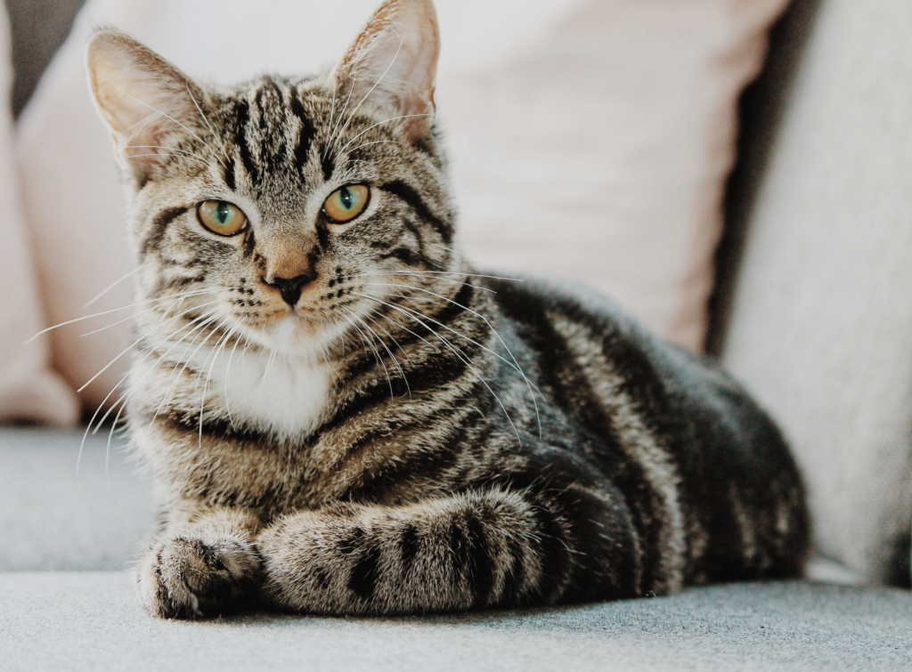
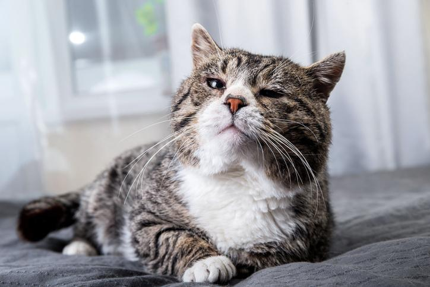

Bienvenido al maravilloso mundo de los gatos! Estos felinos son compañeros encantadores y únicos, pero para que sean felices y saludables, necesitan cuidados especiales a lo largo de todas las etapas de su vida. Aquí te ofrecemos una guía completa y amigable para que puedas darle a tu gato el mejor cuidado posible, sin importar su edad.
1. Cuidando a los Gatitos: De 0 a 6 Meses

-Primeros Pasos
Cuando un gatito llega a tu hogar, es crucial asegurarse de que se sienta seguro y cómodo. Proporciónale un espacio tranquilo y cálido con una cama suave. Los gatitos son curiosos por naturaleza, así que asegúrate de que su entorno sea seguro y libre de peligros.
-Nutrición y Alimentación
Los gatitos tienen necesidades nutricionales específicas. Durante los primeros meses, su dieta debe estar basada en comida para gatitos, rica en proteínas y calorías. Los alimentos secos y húmedos diseñados para cachorros de gato son ideales para fomentar un crecimiento saludable.
-Cuidado y Socialización
Es importante acostumbrar a los gatitos a la interacción humana y al manejo. Juega con ellos utilizando juguetes apropiados y asegúrate de que reciban muchas caricias y atención. La socialización temprana ayuda a que crezcan en gatos bien adaptados y amigables.
-Higiene
Durante esta etapa, los gatitos pueden necesitar ayuda con la limpieza, especialmente si están en proceso de aprender a usar la caja de arena. Limpia la caja de arena regularmente y asegúrate de que siempre esté disponible.
2. Gatos Jóvenes: De 6 Meses a 3 Años
-Desarrollo y Energía
Los gatos jóvenes son activos y curiosos. Proporciona juguetes interactivos y oportunidades para el ejercicio, como rascadores y espacios para trepar. Esta es una etapa crucial para desarrollar sus habilidades físicas y mentales.
-Alimentación
Continúa con comida para gatos adultos, ajustada a sus necesidades energéticas. Asegúrate de seguir las recomendaciones del fabricante en cuanto a las cantidades para evitar problemas de sobrepeso.
-Salud y Cuidado Veterinario
Programa revisiones veterinarias regulares y asegúrate de que esté al día con sus vacunas y tratamientos antiparasitarios. Es un buen momento para considerar la esterilización o castración, si aún no lo has hecho.
-Higiene
Cepilla a tu gato regularmente para reducir el riesgo de bolas de pelo y mantener su pelaje en buenas condiciones. También revisa sus uñas y córtalas si es necesario.
3. Gatos Adultos: De 3 a 10 Años

-Bienestar General
Los gatos adultos suelen tener un ritmo de vida más estable. Asegúrate de proporcionarles una dieta equilibrada y ajusta las raciones según su nivel de actividad. Mantén un control sobre su peso y salud general.
-Cuidado Dental
La salud dental es crucial. Cepilla los dientes de tu gato regularmente o utiliza golosinas dentales para prevenir problemas como la enfermedad periodontal.
-Control del Estrés
Proporciona un entorno enriquecido y tranquilo. Los gatos adultos también necesitan estimulación mental y física para evitar el aburrimiento, así que mantén los juguetes y actividades variadas.
4. Gatos Mayores: A Partir de 10 Años
-Atención Especial
A medida que los gatos envejecen, pueden enfrentar problemas de salud relacionados con la edad. Realiza chequeos veterinarios más frecuentes y observa cualquier cambio en su comportamiento o apetito.
-Nutrición Adaptada
Los gatos mayores pueden beneficiarse de una dieta especial para gatos senior, formulada para apoyar la salud de las articulaciones y la función renal. Consulta con tu veterinario sobre la mejor dieta para tu gato.
-Comodidad y Accesibilidad
Asegúrate de que tu gato tenga fácil acceso a sus áreas favoritas, como la cama y la caja de arena. Considera utilizar rampas o almohadillas antideslizantes si tiene problemas para moverse.
-Cuidado de su Pelaje
Cepilla a tu gato regularmente para ayudarlo a mantener su pelaje en buen estado y evitar enredos. Los gatos mayores pueden necesitar más ayuda con la higiene debido a su menor movilidad.
Con estos consejos, estarás bien equipado para proporcionar el mejor cuidado a tu gato en cada etapa de su vida. Recuerda, la clave para una vida feliz y saludable para tu felino es el amor y la atención que le brindes. ¡Disfruta cada momento con tu amigo peludo!